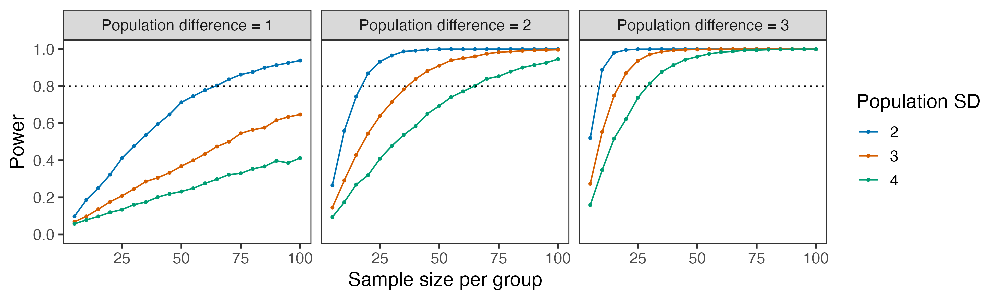

Untitled
Initial setup
Comparing more than two groups
So far, we have considered comparisons between two population means.
For example, we might ask whether mean blood pressure differs between two treatment groups:
\[\large H_0: \mu_A = \mu_B\]
But many studies involve more than two groups. Suppose instead that we have three treatment groups, and we want to compare their population means:
\[\large \mu_A,\quad \mu_B,\quad \mu_C\]
How should we make this comparison?
Let’s start by considering what we might observe when the three population means are actually the same.
Two things to note:
Even when the population means are equal, the sample means will differ because of sampling variability.
When the population means differ, the observed differences among the sample means reflect both the population differences and sampling variability.
The question we need to answer is: are the observed differences among the sample means larger than we would expect from sampling variability alone?
Analysis of variance
Analysis of variance (ANOVA) provides a way to compare the means of more than two populations.
For three groups, we can express the question as:
\[\large H_0:\mu_A=\mu_B=\mu_C\]
\[\large H_A:\text{the population means are not all equal}\]
ANOVA compares two types of variability:
- Within-group variability: How much do individual observations vary within each group?
- Between-group variability: How much do the group means vary from one another?
If the population means are equal, we still expect some variation among the sample means because of sampling variability.
But if the sample means vary substantially relative to the variability within the groups, that suggests that the population means may not all be equal.
This leads to the F-statistic:
\[\large F \approx \frac{\text{between-group variability}} {\text{within-group variability}}\]
Measuring variability within and between groups
The dashed line represents the overall mean, and the red lines represent the group means.
The two sources of variability, within-group variability and between-group variability can be measured using the same basic idea we use to calculate a variance:
squared distances from a mean.
Within-group variability
For within-group variability, we measure the squared distance between each observation and the mean of its own group:\[SS_{\text{within}} = \sum_{j=1}^{k} \sum_{i=1}^{n_j} (x_{ij}-\bar{x}_j)^2\]where\(\Large k\)is the number of groups and\(\Large n_j\)is the number of observations in group\(\Large j\).
Between-group variability
For between-group variability, we measure the squared distance between each group mean and the overall mean, accounting for the number of observations in each group:\[SS_{\text{between}} = \sum_{j=1}^{k} n_j(\bar{x}_j-\bar{x})^2\]The factor\(\large n_j\)accounts for sample size, putting the variability among the sample means back on the scale of the individual observations.
Sums of squares\(\large SS_{\text{within}}\)and\(\large SS_{\text{between}}\)are called the sums of squares.
As with a sample variance, we divide by the appropriate degrees of freedom to obtain measures of variability:\[MS_{\text{within}} = \frac{SS_{\text{within}}}{N-k}\]\[MS_{\text{between}} = \frac{SS_{\text{between}}}{k-1}\]These quantities are called mean squares.
Under the null hypothesis, both\(\large MS_{\text{within}}\)and\(\large MS_{\text{between}}\)estimate the same population variance\(\large \sigma^2\).
ANOVA compares them using the F-statistic:\[F = \frac{MS_{\text{between}}} {MS_{\text{within}}}\]### Why does variability among the group means estimate\(\large \sigma^2\)?
Suppose each group has\(\large n\)observations.
Individual observations vary with variance:\[\operatorname{Var}(X)=\sigma^2\]- Sample means vary less:\[\operatorname{Var}(\bar X_j)=\frac{\sigma^2}{n}\]- Under\(\large H_0\), differences among the sample means arise entirely from sampling variability.
The between-group sum of squares multiplies the squared differences among the means by\(\large n\):\[SS_{\text{between}} = n\sum_j(\bar X_j-\bar X)^2\]> Multiplying by\(\large n\)puts the variability among the sample means back on the\(\large \sigma^2\)scale.
What happens when the population means are equal?
Under the null hypothesis:
-\(\large MS_{\text{within}}\)estimates variability among individual observations within the populations. -\(\large MS_{\text{between}}\)uses variability among the sample means to estimate that same underlying population variance.\[MS_{\text{within}} \approx \sigma^2 \qquad\text{and}\qquad MS_{\text{between}} \approx \sigma^2\]Therefore:\[F=\frac{MS_{\text{between}}}{MS_{\text{within}}} \approx 1\]> If the population means differ,\(\large MS_{\text{between}}\)also reflects those differences and tends to become larger.
###\(\Large F\)distribution
The shape of the\(\Large F\)distribution is determined by two degrees of freedom - one associated with\(\large MS_{\text{between}}\)and one with\(\large MS_{\text{within}}\):\[df_1 = k - 1,\qquad df_2 = N-k\]The F-distribution for our example has\(\large df_1 = 3 - 1\), and\(\large df_2 = 90 - 3\)```{webr-r} #| classes: webr-plot
plot_F <- function(df1, df2, print_p = FALSE, F_obs = NULL) {
x <- seq(0, 16, length.out = 1000)
dd_f <- data.table( f = x, density = df(x, df1 = df1, df2 = df2) )
p_f <- ggplot(dd_f, aes(x = f, y = density)) + labs( x = “F”, y = “Density”, title = sprintf(“F-distribution (df1 = %d, df2 = %d)”, df1, df2) ) + scale_y_continuous(expand = expansion(mult = c(0, 0.05)))
if (print_p == TRUE) { p_f <- p_f + geom_area(data = dd_f[f >= F_obs], aes(x = f, y = density), fill = “grey90”) + geom_segment( x = F_obs, xend = F_obs, y = 0, yend = df(F_obs, df1 = df1, df2 = df2), linewidth = 0.2, color = “pink” ) + annotate(“text”, x = F_obs - 2.5, y = 0.15, label = sprintf(“F = %.2f”, F_obs),hjust = -0.1, size = 4) }
p_f + geom_line(linewidth = 0.8)
}
plot_F(df1 = 2, df2 = 87)
### Fitting the ANOVA model
Let's return to our simulated data and test:$$H_0:\mu_A=\mu_B=\mu_C$$$$H_A:\text{the population means are not all equal}$$Here are the group averages and within-group standard deviations:
```{webr-r}
dd[, .(
n = .N,
mean = mean(y),
sd = sd(y)
), by = group]The model can be estimated in R using the function aov():
The shaded area to the right of the observed\(\large F\)-statistic is the p-value:
Example - weight loss programs
In this example, participants are in one of four weight-loss groups (three active programs and a control). The outcome is weight loss over 8 weeks, defined as the difference between baseline and 8-week weight.
The ANOVA p-value is small, suggesting that the population means are not all equal.
However, the ANOVA does not tell us which groups differ from one another.
Which groups differ?
The overall ANOVA suggests that the population means are not all equal, but it does not tell us which groups differ.
We could compare each pair of groups separately. With four groups, there are
\[\large {4 \choose 2}=6\]
possible pairwise comparisons (0/1, 0/2, 0/3, 1/2, 1/3, 2/3).
However, making multiple comparisons creates a problem: the more comparisons we make, the greater the chance that at least one comparison will appear statistically significant, even if none of the population means differ.
Tukey’s method …
allows us to estimate all pairwise differences while accounting for the fact that we are making multiple comparisons.
For each pair of groups, Tukey’s method provides:
diff: the estimated difference between the two group meanslwrandupr: a 95% confidence interval for the differencep adj: a p-value adjusted for the fact that we are making multiple comparisons
The 95% confidence intervals are simultaneous confidence intervals: they are constructed so that, over repeated samples, all of the true pairwise differences would be contained within their respective intervals 95% of the time.
As a result, the intervals are wider than the confidence intervals we would calculate if each comparison were considered separately.
We will return to the problem of multiple comparisons later in the course. For now, the important point is that once we start asking several questions of the same data, we need to account for the fact that we are making several comparisons.
Assumptions and robustness
The classical one-way ANOVA has several assumptions, with some important caveats:
Independent observations: independence comes from the study design and data structure. Paired, repeated, or clustered observations require a different approach.
Normality: as with the \(t\)-test, the \(F\)-test used in ANOVA is generally robust to moderate departures from normality. The normality assumption concerns the distributions within the groups (or equivalently, the model residuals), not the overall distribution after combining all groups.
Equal population variances: The classical ANOVA \(F\)-test is reasonably robust to moderate differences in variance, particularly when group sizes are similar.
Equal sample sizes are not required, but when variances differ substantially, especially with unequal group sizes, we can use Welch’s ANOVA in R with function
oneway.test():
A rank-based comparison of more than two groups
Earlier, we used the Wilcoxon rank-sum test to compare two independent groups using the ranks of the observations rather than their numerical values.
The Kruskal–Wallis test extends this same rank-based idea to more than two independent groups.
The observations are pooled and ranked from smallest to largest, and we ask whether the groups tend to occupy different positions in the ranking.
The Kruskal–Wallis statistic does this by comparing the average ranks across groups.
This is done with the R function kruskal.test():
The small p-value suggests that the groups differ in where their observations tend to fall in the overall ranking.
As with the Wilcoxon rank-sum test, Kruskal–Wallis is not simply a test of population medians, nor should it be viewed simply as “ANOVA for non-normal data.”
If the group distributions have similar shapes, the test can be interpreted as a comparison of their locations.
Power
Suppose we are comparing two populations and there really is a difference between their means:
\[\large \mu_A = 10 \qquad\text{and}\qquad \mu_B = 12\]
so that the true population difference is
\[\large \mu_B-\mu_A=2.\]
If we conduct a study comparing these two groups, will we necessarily detect the difference?
Let’s simulate a study with \(n\) observations in each group.
We know that the population means differ by 2. But because of sampling variability, the estimated difference will vary from study to study.
If we repeated the study with new samples, sometimes the observed difference would be large enough to produce a small p-value, and sometimes it would not.
If a population difference really exists, how likely is our study to detect it?
Repeating the study
Instead of conducting the study once, let’s simulate it many times.
For each simulated study, we will:
- sample \(n\) observations from each population;
- estimate the difference between the group means;
- conduct a two-sample t-test;
- record whether \(p < 0.05\).
Let’s plot the observed \(t\)-values:
Each value in the histogram is the \(t\)-statistic from one simulated study. In every simulation, the population means differ by 2.
The blue region represents studies that reject \(H_0\); the gray region represents studies that fail to reject \(H_0\), even though the population means really are different.
The probability of rejecting the null hypothesis when a particular alternative is true is called power:
\[\large \text{Power} = P(\text{reject } H_0 \mid \mu_B - \mu_A = 2)\]
The probability of failing to reject the null hypothesis when that alternative is true is the Type II error probability, denoted by \(\beta\):
\[\large \beta = P(\text{fail to reject } H_0 \mid \mu_B - \mu_A = 2)\]
Therefore,
\[\large \text{Power} = 1-\beta\]
A study does not have a single power independent of the effect. Power depends on the particular population difference we want the study to be able to detect.
What determines power?
Power increases when the population difference becomes large relative to the sampling variability of its estimate.
Let’s see how changes in the study affect power.
Increasing the sample size (\(\large n_A\)and\(\large n_B\)) reduces the sampling variability of the estimated difference:\[SE(\bar Y_B-\bar Y_A)
=
\sqrt{\frac{\sigma_A^2}{n_A}+
\frac{\sigma_B^2}{n_B}}\]{webr-r} estimate_power(n = 10) estimate_power(n = 20) estimate_power(n = 50) estimate_power(n = 100)
Increasing the population standard deviations (\(\large \sigma_A\)and\(\large \sigma_B\)) increases the sampling variability of the estimated difference:
Increasing the population difference (\(\large \mu_B - \mu_A\)) increases power:
Power curves
We can put these relationships together in a set of power curves:

A power curve shows the probability of rejecting the null hypothesis across a range of possible population differences.
For any particular population difference, power depends on the sample size and the variability of the outcome.
Power also depends on the threshold we use for rejecting the null hypothesis. Increasing\(\large \alpha\)makes it easier to reject\(H_0\)and therefore increases power—but at the cost of increasing the probability of a Type I error. We generally specify\(\large \alpha\)in advance rather than choosing it as a way to increase power.
Standardized effect size
The simulations show that power depends both on the size of the population difference and on the variability of the outcome.
A difference of 2 units is relatively large when the population standard deviation is 3, but relatively small when the standard deviation is 10.
One way to express the size of a difference relative to the variability is the standardized mean difference:\[d = \frac{\mu_B-\mu_A}{\sigma}\]For our example,\[d = \frac{12-10}{3} = 0.67.\]This standardized effect size is often called Cohen’s\(d\).
Standardized effect sizes express the population difference relative to the variability of the outcome and are particularly useful in power and sample-size calculations.
However, when the original units are scientifically meaningful, a difference expressed in those units is often easier to interpret.
From power to sample size
Before conducting a study, we usually face the problem in the opposite direction.
We specify a population difference that would be important to detect and ask:
How large a sample do we need to have a reasonable chance of detecting that difference?
We can calculate the required sample size using power.t.test() in R.
Suppose a difference of 2 units is scientifically meaningful, we expect the population SD to be approximately 3, and we want an 80% probability of rejecting\(\large H_0\)if the true population difference is 2, using\(\large \alpha = 0.05\). What is the target sample size for each group?
power.t.test() calculates analytically the same quantity that we estimated through simulation.
Alternatively, the pwr.t.test() function in the pwr package specifies the population difference using Cohen’s\(d\). In this case,\[d = \frac{\Delta}{\sigma} = \frac{2}{3}.\]
The two approaches give essentially the same result; Cohen’s d simply combines the population difference and SD into a single standardized quantity.
Sample size calculations require us to specify what population difference matters scientifically and how likely we want the study to be to detect that difference.